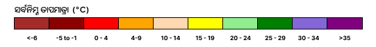

<ion-header class="ion-no-border ion-text-center">
  <ion-toolbar>
    <ion-title *ngIf="fab == 'tmax'">
      {{"Maximum" | translate }}<br>{{"Temperature Forecast" | translate }}
    </ion-title>
    <ion-title *ngIf="fab == 'tmin'">{{"Minimum" | translate }}<br>{{"Temperature Forecast" | translate }}
    </ion-title>
    <ion-title *ngIf="fab == 'rh'">{{"Relative Humidity Forecast" | translate }}</ion-title>
    <ion-title *ngIf="fab == 'rainfall'">{{"Rainfall Forecast" | translate }}</ion-title>

    <ion-buttons slot="start">
      <ion-back-button class="back-button" defaultHref="weather"></ion-back-button>
    </ion-buttons>
    <ion-buttons>
      <div class="entity">
        
        
      </div>
    </ion-buttons>
  </ion-toolbar>
</ion-header>

<ion-content scrollY="false">

  <div class="map-container">
    <div id="map" #map [ngClass]="district==false ? 'shorten-map' : ''"></div>
    <div id="skeleton" class="skeleton skeleton-card" style="height: 100vh; border-radius: 0"></div>
  </div>

  <ion-label *ngIf="dist_name !=null" class="district-name">
    <span>{{"District" | translate}}</span> : {{dist_name.toLowerCase() | translate}}
  </ion-label>
  <div [ngClass]="fabState? 'backdrop':''"></div>

  <ion-fab vertical="bottom" *ngIf="(district == true) || ( block_loading==false && block_forecast_data==null)">
    <!-- <ion-fab vertical="bottom" *ngIf="district"> -->
    <ion-fab-button (click)="showHideBackdrop()">
      <ion-icon name="chevron-up-outline"></ion-icon>
    </ion-fab-button>
    <ion-fab-list side="top" (click)="showHideBackdrop()">

      <ion-fab-button class="ion-no-padding ion-text-left" [ngClass]="this.fab == 'rh'? 'fab-active':''"
        (click)="updateFAB('rh')">
        <ion-label>{{"Relative Humidity" | translate}}</ion-label>
        <ion-icon src='../../../../../assets/modules/weather/map/humidity_ic.svg'></ion-icon>
      </ion-fab-button>

      <ion-fab-button class="ion-no-padding ion-text-left" [ngClass]="this.fab == 'tmax'? 'fab-active':''"
        (click)="updateFAB('tmax')">
        <ion-label>{{"Maximum Temperature" | translate}}</ion-label>
        <ion-icon src='../../../../../assets/modules/weather/map/temp_h_ic.svg'></ion-icon>
      </ion-fab-button>
      <ion-fab-button class="ion-no-padding ion-text-left" [ngClass]="this.fab == 'tmin'? 'fab-active':''"
        (click)="updateFAB('tmin')">
        <ion-label>{{"Minimum Temperature" | translate}}</ion-label>
        <ion-icon src='../../../../../assets/modules/weather/map/temp_l_ic.svg'></ion-icon>
      </ion-fab-button>

      <ion-fab-button class="ion-no-padding ion-text-left" [ngClass]="this.fab == 'rainfall'? 'fab-active':''"
        (click)="updateFAB('rainfall')">
        <ion-label>{{"Rainfall" | translate}}</ion-label>
        <ion-icon src='../../../../../assets/modules/weather/map/rain_ic.svg'></ion-icon>

      </ion-fab-button>

    </ion-fab-list>
  </ion-fab>

  <ion-footer *ngIf="district">
    <ion-button size="small" class="ion-no-padding play-button" (click)="play()">
      <ion-icon name="play"></ion-icon>
    </ion-button>
    <ion-button size="small" class="ion-no-padding play-button" (click)="pause()" *ngIf="run">
      <ion-icon name="pause"></ion-icon>
    </ion-button>
    <ion-grid #content class="ion-no-padding time-holder">
      <ion-col *ngFor="let date of date_options;let i=index;" id="{{i}}" class="ion-no-padding ion-text-center">
        <ion-button class="time-button" [class.focus]="scrollTo ==i" (click)="fcDateClicked($event);scrollTo =i">
          {{date}}
        </ion-button>
      </ion-col>
    </ion-grid>
  </ion-footer>
  <!-- <div class="legend" *ngIf="district && lang=='en'"> -->
  <div class="legend" *ngIf="lang=='en'">
    
    
    
    
    <br />
  </div>
  <div class="legend" *ngIf="lang=='od'">
    <!-- <div class="legend" *ngIf="district && lang=='od'"> -->
    
    
    
    
    <br />
  </div>


  <div class="forecast-footer"
    [ngClass]="block_forecast_data!=null || block_loading==true ? 'forecast-footer-extend' : ''" *ngIf="blocks">
    <div *ngIf="block_loading" style="margin: 15px;">
      <div id="skeleton">
        <div class="skeleton skeleton-header" style="margin: 0 auto;width: 200px;margin-bottom: 30px;margin-top: 20px;">
        </div>
        <div class="skeleton skeleton-header"></div>
        <div class="skeleton skeleton-card"></div>
      </div>
    </div>

    <div *ngIf="block_forecast_data==null">
      <ion-row>
        <ion-col>
          <div class="card-location">
            <ion-icon src="../../../../../assets/home/card/location.svg"></ion-icon>
            <p>
              {{"Select a location by clicking on the map" | translate}}
            </p>
          </div>
        </ion-col>
      </ion-row>

    </div>
    <div *ngIf="block_forecast_data != null">
      <ion-row>
        <ion-col>
          <div class="card-location">
            <ion-icon src="../../../assets/home/card/location.svg"></ion-icon>
            <p *ngIf="lang == 'en'">
              {{ current_location_block }},
              {{ current_location_district }}
            </p>
            <p *ngIf="lang == 'od'">
              {{ current_location_block_ory }},
              {{ current_location_district_ory }}
            </p>
            <ion-icon name="close" class="close-button" (click)=" closeForecast()">
            </ion-icon>

          </div>
        </ion-col>
      </ion-row>
      <ion-label class="ion-padding-start">{{
        "Forecast for next 5 days" | translate
        }}
      </ion-label>

      <ion-row>
        <ion-col class="weather-forcast">
          <ion-card>
            <ion-grid>
              <ion-row style="color: var(--ion-color-primary)">
                <ion-col class="ion-text-center" style="padding-top: 5px; padding-left: 2px">
                  <ion-icon style="font-size: 1.3rem" src="../../../../../assets/modules/weather/day.svg"></ion-icon>
                </ion-col>
                <ion-col class="ion-text-center">
                  <ion-icon style="font-size: 1.3rem" src="../../../../../assets/modules/weather/rain.svg"></ion-icon>
                </ion-col>
                <ion-col class="ion-text-center">
                  <ion-icon style="font-size: 1.3rem" src="../../../../../assets/modules/weather/t_high_b.svg">
                  </ion-icon>
                </ion-col>
                <ion-col class="ion-text-center">
                  <ion-icon style="font-size: 1.3rem" src="../../../../../assets/modules/weather/t_low_b.svg">
                  </ion-icon>
                </ion-col>
                <ion-col class="ion-text-center">
                  <ion-icon style="font-size: 1.3rem" src="../../../../../assets/modules/weather/humidity_b.svg">
                  </ion-icon>
                </ion-col>
                <!-- <ion-col class="ion-text-center">
                        <ion-icon style="font-size: 1.3rem" src="../../../../../assets/modules/weather/wind_b.svg">
                        </ion-icon>
                      </ion-col> -->
              </ion-row>

              <ion-row *ngFor="let forcast of block_forecast_data" class="ion-no-padding weather-forcast-details">
                <ion-col style="color: #fe922d">
                  {{ forcast.day_name }}
                </ion-col>
                <ion-col> {{ forcast.rainfall }}mm </ion-col>
                <ion-col> {{ forcast.temp_max }}°C </ion-col>
                <ion-col> {{ forcast.temp_min }}°C </ion-col>
                <ion-col> {{ forcast.humidity }}% </ion-col>
                <!-- <ion-col>
                        {{ forcast.wind_speed }}km/<span style="text-transform: lowercase">s</span>
                      </ion-col> -->
              </ion-row>
            </ion-grid>
          </ion-card>
        </ion-col>
      </ion-row>


      <!-- <ion-row *ngIf="fab=='rainfall'" class="forecast ion-padding-top ion-padding-bottom " size="12">
        <ion-col *ngFor="let forecast of block_forecast_data" class="ion-text-center" size="2.4">
          <ion-label style="color:var(--ion-color-primary)"> {{convertDate(forecast.fcst_date)}}</ion-label><br /><br />
          <ion-label class="temperature temperature-{{forecast.heat_wave_status}}">
            {{forecast.rainfall}}<br>mm
          </ion-label>
        </ion-col>
      </ion-row>
      <ion-row *ngIf="fab=='tmax'" class="forecast ion-padding-top ion-padding-bottom " size="12">
        <ion-col *ngFor="let forecast of block_forecast_data" class="ion-text-center" size="2.4">
          <ion-label style="color:var(--ion-color-primary)"> {{convertDate(forecast.fcst_date)}}</ion-label><br /><br />
          <ion-label class="temperature temperature-{{forecast.heat_wave_status}}">
            {{forecast.temp_max}}°C
          </ion-label>
        </ion-col>
      </ion-row>
      <ion-row *ngIf="fab=='tmin'" class="forecast ion-padding-top ion-padding-bottom " size="12">
        <ion-col *ngFor="let forecast of block_forecast_data" class="ion-text-center" size="2.4">
          <ion-label style="color:var(--ion-color-primary)"> {{convertDate(forecast.fcst_date)}}</ion-label><br /><br />
          <ion-label class="temperature temperature-{{forecast.heat_wave_status}}">
            {{forecast.temp_min}}°C
          </ion-label>
        </ion-col>
      </ion-row>
      <ion-row *ngIf="fab=='rh'" class="forecast ion-padding-top ion-padding-bottom " size="12">
        <ion-col *ngFor="let forecast of block_forecast_data" class="ion-text-center" size="2.4">
          <ion-label style="color:var(--ion-color-primary)"> {{convertDate(forecast.fcst_date)}}</ion-label><br /><br />
          <ion-label class="temperature temperature-{{forecast.heat_wave_status}}">
            {{forecast.humidity}}%
          </ion-label>
        </ion-col>
      </ion-row> -->
    </div>


  </div>

</ion-content>